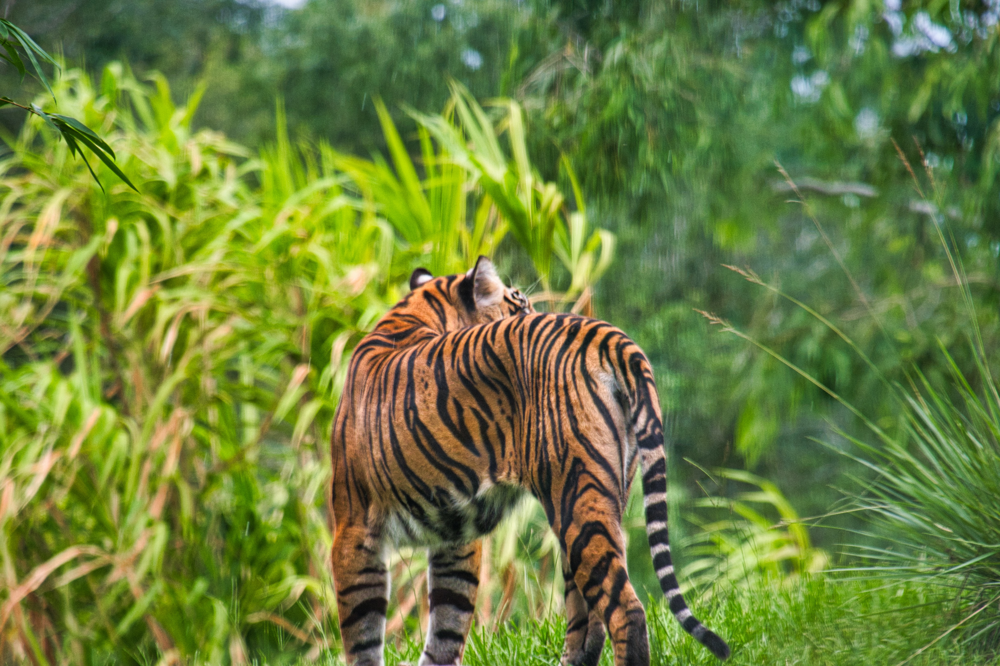

Deforestation
Deforestation: Out of Sight out of Mind?
11 November 2020
🌲 #1 cause is … You!
Introduction
Welcome to this article about deforestation & its causes. I will get into the 7 biggest causes in a later article. But, in this article I'll address the paramount cause: "Us" Yes: you, me & your neighbour. We can sure talk about deforestation, but let's always remember it's us humans that perform it together.
The 7 Causes of deforestation
1. Mindset (the topic of this article)
2. Policy
3. Lacking Technology
4. Poverty
5. Lacking oversight
6. Lacking pressure
7. Legal Stalemate
~~~
15 Billion trees are cut each year and that number's still increasing | Photo by David Vig on Unsplash
Globalization & a changing 'Hinterland'
7+ Billion people inhabit the earth today. They take up more than 50% of the land surface. They mostly conglomerate in cities, but they need hinterlands and their produce to survive.
Now, I can hear you asking:
"Hinterland? What is that?"
This German word used to concern agriculture in the immediate proximity to a city - hinterlands support countries / cities by providing food, timber and other vital products. But, current globalization demands us to redefine: Can we really ignore the banana or the rosewood guitar that made their way into, say, Brussels? Whether you see it or not:
There are still 15 Billion trees being cut each year.
So, I could point fingers to countries like Brazil, Indonesia or Vietnam. But if I have their products in my fridge, how can I?
In other words:
the end-user determines what the market offers.
~~~
Out of sight, out of mind?

There are 400–600 Sumatran Tigers left in the wild. Their Indonesian siblings are already extinct. But, local logging does not even stop. Photo by Brian McGowan on Unsplash
We as a collective cause deforestation. In that sense, the only true cause of major deforestation is the 7+ Billion end-users on this world, with many of them caring more for having 17 different flavors of shampoo (with palm oil) than the critically endangered Sumatran tiger.
The snicker bar in the grocery store and the wooden whinebox are at the front of people's mind: you see it when you explore the local shop. But, how well do they consider ecological footprints?- I don't think it's as present in their minds.
Industrialized people rarely get to see deforestation at their country of residence, and this is the problem with the world growing wealthier. Re-thinking environmental awareness is critical to tackling deforestation.
We already have the (close to unsolvable) problem of 356,000 people being born each day, so…
We need to address the root of everything: People's mind.
~~~
One of the most critical remedies to deforestation is changing people's spending behaviour. We're not talking about the self-sustaining farmer in Bolivia, but us rich people, who read Medium and will probably order Dominos at 9.35 tonight. Indeed, it's the rich that should be alarmed about their 'deforestation footprint'.
Greenpeace points out that industrialized [wealthy] citizens use 12x more wood than people from non-industrialized countries.
So, If the UN would pressure countries like Brazil and Indonesia (notorious loggers), we're both literally and figuratively barking up the wrong tree. Let me instead re-iterate that we end-users cause deforestation. I can - and will-write articles about other notable causes, but people's mindset is truly
the 'key to a forest's heart'.
If we can reduce harmful consumption by 3-5% in 'Western' countries, we're already saving country-sized plots of forests.
Many Salivate at the site of this, but do you realize it's huge ecological footprint? | Photo by Charisse Kenion on Unsplashh
~~~
Concretizing
How do you change people's mindset, concretely? It's here where our title comes in: 'out of sight out of mind'. The hinterland changed from local to overseas for developed countries & cities. It's why awareness is all the more important. On that note, there are two ways to change people's mind
1 Present the problem visually | A documentary may show the vast logging in Uruguay from 2010–2020.
2. Confront people with their footprint | Host information evening about concrete problems, such as exorbitant toilet paper resulting in the use of one more tree every 4–5 years.*
*Another notable (and upcoming) solution to point 2. is using blockchain to log the exact footprint of each product. A similar blockchain program is already inspiring the global Agriculture market.
~~~
Conclusion
The main driver of deforestation is the mindset of the end-user. If (s)he doesn't buy, it won't be produced. Stay tuned for somewhat more niched causes of deforestation.
~ Jay Samuelson | Please let me know what you think